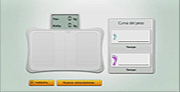

3 |
Uso del controller |
 |
Ci sono diversi modi per impugnare il telecomando Wii ed essi variano a seconda che lo si usi da solo o insieme ad altri accessori.
 Nota: consulta sempre il manuale di istruzioni del controller che stai utilizzando.
Segui la procedura descritta di seguito per preparare la Wii Balance Board all’uso.
Se la Wii Balance Board è già sincronizzata con la console Wii:

Se la Wii Balance Board non è sincronizzata con la console Wii:

Nota: se il laccetto che stai utilizzando presenta una levetta, assicurati che questa sia in posizione di chiusura. In questo modo eviterai che il laccetto si allenti.
|


 |
 |
 |